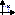
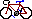

bbbike
bbbike - Informationssystem für Radfahrer in Berlin und Brandenburg
bbbike [options]
BBBike ist ein Informationssystem für Radfahrer in Berlin und
Brandenburg. Mit dem Programm können Routen, optimiert für
Radfahrer, automatisch gesucht oder manuell erstellt werden. Bei der
automatischen Suche wird die kürzeste Strecke zwischen zwei
angegebenen Punkten gesucht. Bei der manuellen Routenerstellung
können abschnittsweise Zwischenpunkte eingegeben werden und zum
Schluss die Gesamtlänge abgelesen werden.
Eine einfache WWW-Version kann man unter der Adresse
http://www.bbbike.de finden.
Wenn eine Verbindung zum Internet existiert, kann BBBike die
aktuellen Wetterdaten von der FU Berlin (Dahlem) die Windstärke
und -richtung auswerten. Diese Daten können bei der Berechnung der
Fahrzeit und Leistung verwendet werden.
Ein Teil von BBBike ist das perl-Modul BikePower. Mit
diesem Modul kann (wie beim ursprünglichen
bike_power-Programm von Ken Roberts - roberts@cs.columbia.edu )
anhand von Daten wie Gefälle, Wind, Rollwiderstand der Reifen,
Luftwiderstand, Masse von Rad und Fahrer die Leistung ermittelt
werden.
BBBike liefert unter anderem die Antwort auf folgende Fragen:
-
Wie lang ist die Strecke von A nach B?
-
Wie lange brauche ich von A nach B, wenn ich durchschnittlich 15 km/h
schnell fahre?
-
Wie lange brauche ich von A nach B, wenn ich mit 100 Watt Leistung
fahre, mit Berücksichtigung des aktuellen Windes und von Steigungen
auf der Strecke?
-
Auf welchen Straßen muss ich fahren und wie muss ich abbiegen,
wenn ich von A nach B kommen will?
-
Wo habe ich Gegenwind- und Rückenwindstrecken?
-
Wo gibt es Steigungen und Gefälle?
-
Kann ich Hauptstraßen und/oder Kopfsteinpflasterstrecken auf
meiner Strecke vermeiden?
-
Kann ich "grüne" Wege auf meiner Strecke bevorzugen?
Kann ich unbeleuchtete Straßen meiden?
Start- und Zielpunkt einer Route setzt man, indem man mit der linken
Maustaste auf eine Straße klickt. Nach dem Setzen des
Zielpunktes berechnet das Programm die kürzeste Route und zeigt
sie an. Danach kann die Route mit Klick verlängert werden. Soll
eine neue Route (mit neuem Start- und Zielpunkt) berechnet werden,
kann die alte mit dem Kontextmenüpunkt "Route
löschen" oder mit Klick auf das Icon Route
löschen gelöscht werden. Mit der Backspace-Taste
kann der letzte Punkt der Route gelöscht werden. Mit der
Delete-Taste (Entf) kann die Route bis zum letzten Via-Punkt
gelöscht werden.
Die Route kann eingefärbt werden (Menüpunkt Route >
Einfärben der Route), und zwar rot, schwarz, blau oder nach
Windrichtung oder Leistung. Für das Einfärben nach
Windrichtung benötigt man Winddaten (automatisch aus dem WWW
geholt oder manuell eingegeben). Die Rückenwindstrecken werden
dann grün und die Gegenwindstrecken rot dargestellt. Für
das Einfärben nach Leistung benötigt man zusätzlich
die persönlichen Daten des Fahrers (siehe
Bikepower).
Die manuelle Routenerstellung wird zum Beispiel bei der Erstellung
einer Tourplanung verwendet, bei der nicht das Suchen einer
kürzesten Strecke im Vordergrund steht. Sie funktioniert
prinzipiell wie die automatische Suche, nur wird der Benutzer
mehrere Zwischenpunkte eingeben, um die Route festzulegen. Mit Klick
auf Alt-Button1 oder Shift-Button1 (Klick auf die linke Maustaste und
gleichzeitiges Drücken der Alt- oder Shift-Taste) kann ein
beliebiger Punkt gekennzeichnet werden (also ein Punkt, der nicht auf
einer Straße liegt).
Im oberen Bereich des Fensters, unterhalb der Menüleiste (falls
eingeblendet), befindet sich die Informationsleiste von BBBike.
- Ort/Bahnhof
-
Anzeige des Ortes bzw. der Haltestelle unter dem Mauscursor. Die
Angabe ist nur gültig, wenn sie in schwarzer Schrift (und nicht
in grauer) erscheint. Mit einem Klick wird die Ort-Auswahl angezeigt.
- Straße/Strecke
-
Anzeige der Straße bzw. Bahnlinie unter dem Mauscursor. Auch
hier ist die Angabe nur bei schwarzer Schrift gültig. Mit einem
Klick wird die Straßen-Auswahl angezeigt.
- km
-
Länge der aktuellen Route in Kilometern. Mit Klick auf den
Schriftzug "km" kann zwischen der Angabe in Kilometern und
Metern umgeschaltet werden. Falls englisch als Sprache eingestellt
wurde, ist auch die Auswahl "Meilen" möglich.
- %
-
Angabe, wieviel % über der Ideallinie (Luftlinie) die aktuelle
Route liegt. Bei offensichtlichen Rundfahrten bleibt die Angabe leer.
- km/h
-
Fahrzeit bei dieser durchschnittlichen Geschwindigkeit. Mit Klick auf
das km/h-Feld kann eine andere Geschwindigkeit eingegeben werden. Mit
Klick auf die Fahrzeit wird das Alarm-Fenster geöffnet. Mit der
rechten Maustaste kann die jeweilige Geschwindigkeit als
"Referenzgeschwindigkeit" ausgewählt werden. Mit dem
Ampel-Icon kann das Einbeziehen von Ampeln in die Fahrzeit
ein-/ausgeschaltet werden. Mit dem Kopfsteinpflaster-Icon unterhalb
des Ampel-Icons kann das Einbeziehen von Kopfsteinpflaster- und
ähnlichen Strecken in die Fahrzeit ein-/ausgeschaltet werden.
- W
-
Fahrzeit bei dieser durchschnittlichen Leistung, abhängig von
der Windgeschwindigkeit und von Steigungen. Die Berechnung wird mit
dem Modul BikePower durchgeführt. Mit Klick auf das
W-Feld kann eine andere Leistung (in Watt) eingegeben werden. Als
Faustregel kann man 50W für eine gemütliche Fahrweise annehmen. Mit
Klick auf die Fahrzeit wird das Alarm-Fenster geöffnet. Mit der
rechten Maustaste kann die jeweilige Leistung als
"Referenzleistung" (intern wird diese auf eine
Geschwindigkeit umberechnet) ausgewählt werden. Auch hier kann
man mit Ampel- und Kopfsteinpflaster-Icon zum Einbeziehen von
Ampeln/Kopfsteinpflasterstrecken in die Fahrzeit einbeziehen.
- Datum der Winddaten
-
Falls aktuelle Winddaten vorhanden sind, stehen in diesem Feld das
jeweilige Datum und die Uhrzeit. Bei einem Mausklick wird versucht,
die aktuellen Daten über das WWW oder über eine lokale
Datenbank zu holen. Mit der rechten Maustaste erscheint ein Menü
mit folgenden Punkten:
- Wetterstation
-
Hier kann ausgewählt werden, welche der Quellen im Internet
(Meteorologisches Institut der FU oder ggfs. andere Quellen)
verwendet werden soll. Mit "aktuellste" werden alle Quellen nach den
aktuellsten Angaben überprüft.
- Quelle
-
Hier kann angegeben werden, ob die Wetterdaten über das Internet
direkt gezogen werden oder ob ein evtl. vorhandener lokaler Cache bzw
eine lokale Datenbank vorgezogen wird.
- Auswahl aus Datenbank
-
Falls eine lokale Datenbank vorhanden ist, können hiermit
Wetterdaten zu einem bestimmten Tag ausgewählt werden.
- Wind ignorieren
-
Normalerweise wird - falls Winddaten vorhanden sind - die Route anhand
der Windrichtung gefärbt: Rückenwindabschnitte sind
grün, Gegenwindabschnitte rot und Seitenwindabschnitte von
hellgrün bis orange.
Falls der Menüpunkt "Wind ignorieren" angeklickt ist, wird die
Windgeschwindigkeit und -richtung bei der Route und bei der
Zeitberechnung ignoriert. Die Route wird dann in einer einzelnen Farbe
(blau) gezeichnet.
- Aktualisierung
-
Hiermit kann das Zeichnen der Gegenwind- und Rückenwindstrecken
der Route aktualisiert werden.
- automatische Aktualisierung
-
Beim Ändern der Wetterstation bzw. der Quelle werden automatisch
die neuen Wetterdaten geholt.
- automatische Routenaktualisierung
-
Beim Ändern von Wetterdaten werden automatisch die Gegenwind-
und Rückenwindstrecken der Route aktualisiert.
- Winddaten
-
Hier wird, falls vorhanden, die aktuelle Windrichtung und die aktuelle
Windgeschwindigkeit in m/s angezeigt. Mit einem Klick wird ein Fenster
zur manuellen Eingabe der Windrichtung und -geschwindigkeit
geöffnet. Anmerkung: Zwar kann die maximale Windgeschwindigkeit
eingegeben werden, das Programm verwendet aber nur die mittlere
Windgeschwindigkeit für die Zeitberechnungen.
- Temp
-
Anzeige der aktuellen Temperatur. Die Temperatur wird sogar in die
Leistungsberechnung einbezogen, die Auswirkungen darauf sind aber nur
minimal.
Unter manchen Icons befindet sich ein kleiner Pfeil, mit dem ein
zugehöriges Popup-Menü aufgeklappt werden kann. Das
Menü kann auch mit Klick auf die rechte Maus-Taste,
während sich der Maus-Cursor über dem Icon befindet,
aufgerufen werden.
Hier folgt die Beschreibung der Icons von links nach rechts.
Die erste Gruppe kontrolliert, welche Elemente auf der
Kartenfläche dargestellt werden sollen. In allen Menüs
dieser Icons kann mit oben, normal und unten angegeben
werden, ob die Elemente über oder unter allen anderen Elementen
gezeichnet werden sollen oder ob die normale Reihenfolge
wiederhergestellt werden soll (die normale Reihenfolge lautet von
unten nach oben: Flächen, Gewässer, Inseln, Grenzen,
U-Bahnen, Regionalbahnen, S-Bahnen, Straßen,
Landstraßen, Orte). Daneben besitzt jedes Menü einen
Schalter zum Ein- und Ausschalten des Elements und einen Eintrag zum
Auswählen einer bestimmten Straße oder eines bestimmten
Ortes über eine Listbox.
- Straßen-Symbol
Schaltet das Zeichnen von Straßen in Berlin ein oder aus
(Tastatur: s).
Menü: Neben den Standardeinträgen sind noch folgende
Einträge vorhanden:
- Auswahl aus ...
-
In diesem Untermenü kann eine Straße aus alternativen
Verzeichnissen ausgewählt werden:
- Komplette Straßenliste
-
In der Straßen-Datenbank von BBBike sind nur ca. 2300
Straßen erfasst. Straßen, die hier nicht vorhanden sind,
können in der umfangreicheren PLZ-Datenbank ausgewählt
werden. Allerdings wird bei der Auswahl einer nicht vorhandenen
Straße nur der Postleitzahlbereich angezeigt.
- Telefonbuch-Datenbank (Straße)
-
Wenn eine Telefonbuch-CD-ROM 1998/99 oder 1999/2000 für Berlin
vorhanden ist, kann diese Datenbank verwendet werden. Hier kann jede
Straße mit Hausnummer angegeben werden; die Position wird recht
exakt angzeigt.
- Telefonbuch-Datenbank (Name)
-
Mit diesem Formular kann nach Namen im Telefonbuch-Verzeichnis gesucht
werden. Es muss mindestens der Nachname angegeben werden. Mit dem
Schalter Exakt kann eingestellt werden, ob der Nachname exakt
passen muss (ansonsten wird bei der Suche von "Wall" auch "Wallburg"
etc. angezeigt). Nachdem mit Suchen die Ergebnisliste erstellt
wurde, können mit << und >> weitere
passende Datensätze eingesehen werden. Mit Alle werden alle
passenden Datensätze auf der Karte markiert. Wenn ein
dial-Programm vorhanden ist, erscheint noch ein Button
Wählen zum Wählen der Telefonnummer.
- Untermenü Straßenkategorien
-
In diesem Untermenü kann das Zeichnen von Hauptstraßen,
Nebenstraßen und für Kfz gesperrte Straßen ein-
und ausgeschaltet werden.
- Höhenpunkte
-
Höhenpunkte werden in die Karte eingezeichnet.
- Radwege
-
Radwege werden gezeichnet. Benutzungspflichtige Radwege sind
dunkelblau, freiwillig zu nutzende Radwege blau, Radstreifen
grün und Busspuren orange. Für jede Richtung, in die ein
Radweg existiert, wird auf der jeweiligen Straßenseite ein
Radweg gezeichnet, auch wenn es sich eigentlich um einen
Zwei-Richtungs-Radweg auf der falschen Straßenseite handelt.
- Untermenü Radwegekategorien
-
In diesem Untermenü kann das Zeichnen von einigen
Radwegekategorien ein- und ausgeschaltet werden.
- Einbahn-/gesperrte Straßen
-
Kennzeichnung von Einbahnstraßen (blaue Pfeile, die in die
Straßenrichtung zeigen), gesperrten Straßen (rote
Kreuze) sowie Punkten, an denen das Fahrrad getragen werden muss (drei
waagerechte Striche). Temporäre Sperrungen wegen Bauarbeiten
werden mit einem Baustellen-Symbol gekennzeichnet.
- Fähren
-
Zeichnen von Fähren. Um die Fähren auch in der Suche mit
einzubeziehen, muss im Menü von Route suchen der Eintrag
Fähren verwenden aktiviert sein.
- Ampeln
-
Ampeln werden in die Karte eingezeichnet. Bei der Auswahl einer Route
wird die Anzahl der durchgefahrenen Ampeln mit einer ungefähren
Verzögerungszeit (15 Sekunden pro Ampel) im Feld rechts von den
Icons angezeigt.
Reine Fußgängerampeln sind in der Datenbasis nur erfasst,
wenn sie die Fahrt wesentlich verzögern würden (hohe
Fußgängerfrequenz oder stark befahrene Querstraße
direkt vor oder hinter der Ampeln). Beschrankte
Bahnübergänge sind ebenfalls unter den Ampeln zu finden.
- Outline zeichnen
-
Die Straßen werden mit Umrandung gezeichnet.
- Straßennamen
-
Die Straßen werden mit Straßennamen gezeichnet. Ist
wesentlich langsamer, besonders wenn Font rotation eingeschaltet
ist.
- Straßenqualität
-
Die Qualität des Straßenbelags wird gezeichnet. Die
Kategorisierung siegt wie folgt aus:
- dunkelgrün
-
Sehr guter Belag (meist Asphalt). Da die meisten Straßen einen
guten Belag haben, wurde auf eine Erfassung dieser Kategorie meist
verzichtet.
- hellgrün
-
Guter Belag, z.B. gutes Kopfsteinpflaster oder etwas schlechterer
Asphalt.
- orange
-
Mäßiger Belag, z.B. die meisten
Kopfsteinpflasterstraßen.
- rot
-
Schlechter Belag (schlechtes Kopfsteinpflaster, unbefestigte Wege).
- Qualitätskategorien
-
Hiermit kann das Zeichnen der Qualitätskategorien
eingeschränkt werden.
- Sonstige Behinderungen
-
Zeichnen von sonstigen Behinderungen (z.B.
Fußgängerverkehr).
- Landstraßen-Symbol
 Schaltet das Zeichnen von Landstraßen in Berlins Umgebung ein
oder aus (Tastatur:
Schaltet das Zeichnen von Landstraßen in Berlins Umgebung ein
oder aus (Tastatur: l).
Menü: Neben den Standardeinträgen sind noch folgende
Einträge vorhanden:
- Outline zeichnen
-
Gleiche Funktion wie beim Straßen-Symbol.
- Landstraßen jwd zeichnen
-
Zeichnet auch Landstraßen außerhalb Brandenburgs.
- Straßenqualität
-
Gleiche Funktion wie beim Straßen-Symbol.
- Sonstige Behinderungen
-
Gleiche Funktion wie beim Straßen-Symbol.
- Ort-Symbol
Schaltet das Zeichnen von Orten in Brandenburg ein oder aus (Tastatur:
o).
Menü: Neben den Standardeinträgen sind noch folgende
Einträge vorhanden:
- Ortsnamen
-
Anzeige von Ortsnamen ermöglichen oder unterbinden.
- Kategorie
-
In diesem Untermenü kann das Zeichnen von kleineren Orten
unterdrückt werden. Beispielorte für die Kategorisierung:
6 Berlin
5 Potsdam, Brandenburg
4 Werder, Kyritz
3 Ketzin, Lindow
2 Caputh, Göttin
1 Krummensee
0 Ortsteile wie Wilhelmsdorf, Döthen,
Petzow
Mit "Alle" werden alle Orte gezeichnet. Mit
"Auto" werden die Orte abhängig von der Zoom-Stufe
gezeichnet.
- Schriftgröße
-
Untermenü zum Einstellen einer anderen Schriftgröße
für die Anzeige der Ortsnamen. Der Bereich geht von "klein" bis
"sehr groß".
- Überlappungen vermeiden
-
Hier wird mit einem sehr einfachen Algorithmus versucht, die
Ortsbeschriftungen so zu setzen, dass sie sich nicht einander
überlappen. Per Voreinstellung ist diese Option ausgeschaltet,
weil das Zeichnen der Orte dadurch erheblich verlangsamt wird.
Sinnvoll ist diese Option, wenn z.B. die Karte als Bilddatei
abgespeichert werden soll.
- U-Bahn-Symbol
Schaltet das Zeichnen von U-Bahnlinien ein oder aus (Tastatur: u).
Menü: Zusätzlich zum Ein-/Ausschalten und Auswählen
der U-Bahnlinien können auch U-Bahnhöfe ein-/ausgeschaltet
und ausgewählt werden.
Wenn der Punkt U-Bhf-Namen angeklickt wird, werden die jeweiligen
Namen zum U-Bahnhof auf der Karte eingezeichnet. Mit
Überlappungen vermeiden wird versucht, die Namen so zu
setzen, dass sie sich nicht einander überlappen. Siehe auch die
Bemerkung zu Überlappungen vermeiden im Menüpunkt
Ort-Symbol.
Mit VBB-Zone A, VBB-Zone B und in Bau kann das U-Bahn-Netz
zusätzlich auf die jeweilige Zone eingeschränkt werden.
- S-Bahn-Symbol
Schaltet das Zeichnen von S-Bahnlinien ein oder aus (Tastatur: b).
Menü: Wie beim U-Bahn-Symbol.
- RB-Symbol
Schaltet das Zeichnen von Regionalbahnlinien ein oder aus (Tastatur: r).
Menü: Wie beim U-Bahn-Symbol.
- Gewässer-Symbol
Schaltet das Zeichnen von Flüssen, Kanälen und Seen ein
oder aus (Tastatur: w).
Menü: Neben den Standardeinträgen sind noch folgende
Einträge vorhanden:
- Outline zeichnen
-
Wie beim gleichnamigen Eintrag beim Straßen-Symbol.
- Namen der Gewässer
-
Schaltet das Zeichnen der Gewässernamen ein oder aus.
- Gewässer im Umland zeichnen
-
Schaltet das Zeichnen der Gewässer im Umland von Berlin ein oder aus.
- Gewässer in der Stadt zeichnen
-
Schaltet das Zeichnen der Gewässer in Berlin ein oder aus.
- Flächen-Symbol
Schaltet das Zeichnen von sonstigen Flächen (Parks,
Wälder, Flughäfen) ein oder aus (Tastatur: f).
Menü: Neben den Standardeinträgen sind noch folgende
Einträge vorhanden:
- PLZ-Gebiete
-
Schaltet das Zeichnen der Berliner Postleitzahlgrenzen ein oder aus.
Die PLZ-Datenbank ist noch im Aufbau.
- PLZ-Gebiet auswählen
-
Zeigt eine Listbox zum Auswählen einer Berliner Postleitzahl an.
- Grenzen von Berlin
-
Schaltet das Zeichnen der Berliner Stadtgrenze ein oder aus.
- Sehenswürdigkeiten-Symbol
Schaltet das Zeichnen von Sehenswürdigkeiten und anderen wichtigen
Gebäuden ein oder aus. Im Menü gibt es die weiteren Punkte:
- Sehenswürdigkeiten
-
Schaltet das Zeichnen von Sehenswürdigkeiten und anderen
markanten Gebäuden in Berlin und Brandenburg ein oder aus.
- Sehenswürdigkeit auswählen
-
Zeigt eine Listbox zum Auswählen einer Sehenswürdigkeit
an.
- Kneipen
-
Zeichnet genau wie die Schaltfläche Kneipen in Berlin.
- Kneipe auswählen
-
Zeigt eine Listbox zum Auswählen einer Kneipe an.
- Persönliche Orte
-
Zeigt eine Listbox mit persönlich eingetragenen Orten ein. Die
Punkte müssen im
bbd-Format in der Datei
$HOME/.bbbike/personal.bbd vorhanden sein.
- Obst
-
Zeichnet Stellen mit öffentlich zugänglichen
Obstbäumen.
- Zusätzliche Kartenebenen-Symbol
Im Menü gibt es die Punkte:
- Straßen-Layer zeichnen
-
Zeichnet bbd- und andere GPS/GIS-Dateien als
Straßen/Strecken/Flächen.
- Sperrungen-Layer zeichnen
-
Zeichnet bbd-Dateien als "Sperrungen" (gesperrte Straßen,
Einbahnstraßen etc.). Das Straßennetz wird entsprechend der Sperrungen
aktualisiert.
- Punkte-Layer zeichnen
-
Zeichnet bbd- und andere GPS/GIS-Dateien als Punkte.
- Straßen/Punkte auswählen
-
Auswahl eines Objekts aus einer neu gezeichneten Kartenebene anhand
des Namens.
- Letzte geöffnete Layer
-
Zeigt ein Menü der zuletzt geöffneten Kartenebenen/Layer.
- Umordnen
-
Zeigt einen Dialog, in dem die Kartenebenen umgeordnet werden können.
Zurzeit nur unter Unix/X11 möglich.
- Layer löschen
-
Löschen einer zusätzlich gezeichneten Kartenebene.
- Ausschnitt an Layer anpassen
-
Der sichtbare Ausschnitt wird so geändert, dass die gesamte neue
Kartenebene sichtbar ist.
- Scrollregion an Layer anpassen
-
Der Scrollbereich wird auf die Bounding Box der neuen Kartenebene
gesetzt.
- Scrollregion für Layer vergrößern.
-
Der Scrollbereich wird, falls notwendig, so vergrößert, dass die neue
Kartenebene vollständig enthalten ist. Dieser Menüpunkt ist bevorzugt
von den Scrollregion/Ausschnitt-Menüpunkten zu verwenden.
- Linienbreite 1 Punkt
-
Die Linienbreite bei neuen Strecken wird auf einen Punkt gesetzt.
- WWW-Klickmodus
-
Falls in den Namen der neuen Kartenobjekte URLs enthalten sind, können
diese beim Klicken im Web-Browser geladen werden.
- Gpsman-Daten zeichnen
-
Spezielles Zeichnen von Daten, die im gpsman-Format vorliegen.
- GPS-Track-Animation
-
Animation von zuvor mit dem im Menüpunkt "Gpsman-Daten
zeichnen" Tracks.
In der nächsten Gruppe sind die Navigations-Icons:
- Vergrößern-Symbol (+)
-
Es wird ein kleinerer Ausschnitt angezeigt (mehr Details). Tastatur:
+.
- Verkleinern-Symbol (-)
-
Es wird ein größerer Ausschnitt angezeigt (weniger
Details). Tastatur:
-.
- Maßstab-Feld
-
Dieses Feld zeigt den aktuellen Maßstab, bezogen auf den
Bildschirm, an. Die Zahl stimmt nur, wenn die DPI-Zahl des X-Servers
korrekt eingetragen wurde (beim X-Server von XFree86 kann die DPI-Zahl
mit der Option -dpi verändert werden). Mit Klick auf das Feld
kann ein anderer Maßstab angegeben werden und so der
Kartenausschnit vergrößert oder verkleinert werden.
- Übersichtskarten-Symbol
Mit diesem Symbol kann die Übersichtskarte von Berlin und
Brandenburg ein- und ausgeschaltet werden. In der
Übersichtskarte wird der aktuelle Ausschnitt durch ein schwarzes
Rechteck gekennzeichnet. Durch Verschieben dieses Rechtecks wird auch
der aktuelle Ausschnitt verschoben.
- Windrosen-Symbol
Mit dem Windrosen-Symbol kann man die Karte in die vier
Himmelsrichtungen scrollen. Mit der linken Maustaste sind dabei die
Schritte kleiner, mit der mittleren größer. Wenn man
länger auf die Mitte der Windrose klickt (ca. 2 Sekunden), wird
wieder zurück auf die Mitte zentriert. Scrollen kann man auch
mit den Scrollbars oder mit den Tasten Pos1 (links), Ende
(rechts), Bild nach oben und Bild nach unten (jeweils immer
seitenweise) bzw. mit den Cursortasten (feinere Abstufung).
Die folgenden Icons kontrollieren die Suche von Routen:
- Route suchen
Mit diesem Schalter kann man den Suchmodus ein- oder ausschalten.
Normalerweise ist dieser Schalter nicht aktiviert und es ist immer der
Suchmodus eingeschaltet (kann mit der Kommandozeilen-Option
-advanced geändert werden).
Menü:
- Route löschen
-
Die aktuelle Route wird gelöscht. Gleiche Funktion wie
Drücken auf
Shift-Backspace.
Der letzte Punkt der Route wird mit der Backspace-Taste gelöscht.
- Route wiederherstellen (Undo)
-
Die zuletzt gelöschte Route wird wiederhergestellt.
- Route aktualisieren
-
Die Route wird in Bezug auf Wind und Leistung aktualisiert (sollte nicht
notwendig sein).
- gesperrte Straßen beachten
-
Wenn dieser Schalter eingeschaltet ist, werden gesperrte
Straßen und Einbahnstraßen nicht in die Suche
einbezogen.
- Tragen vermeiden
-
Stellen, an denen das Rad getragen werden muss, werden nicht in die
Suche einbezogen.
- Fähren verwenden
-
Fähren werden bei der Suche berücksichtigt.
- Steigungen berechnen
-
Höhenangaben werden eingelesen und bei der Berechnung der
Leistung werden die Höhenangaben für Steigungen und
Gefälle verwendet.
- Ampel-Optimierung
-
Bei der Suche einer Route wird für jede Ampel 25m, 50m oder 100m
auf die entsprechende Strecke aufgeschlagen (nur für den
Suchalgorithmus). Abhängig von der Geschwindigkeit bekommt man
für die Verzögerungszeit pro Ampel folgende Tabelle:
| 15km/h | 20km/h | 25km/h |
|---|
| 25m | 6s | 5s | 4s |
| 50m | 12s | 9s | 7s |
| 100m | 24s | 18s | 14s |
Zu lesen ist die Tabelle wie folgt: wenn man mit 25km/h unterwegs ist
und als Aufschlag 100m gewählt hat, würde dies einer
Verzögerung von durchschnittlich 14s pro Ampel entsprechen.
- Steigungen/Gefälle zeigen
-
Auf der Route liegende Gefälle oder Steigungen über 1%
werden angezeigt.
- Startflagge
-
Schaltet das Zeichnen einer Startflagge am Routenanfangspunkt ein oder
aus.
- Zielflagge
-
Schaltet das Zeichnen einer Zielflagge am Routenendpunkt ein oder aus.
- Sucheinstellungen
- Einbahn-/gesperrte Straßen beachten
-
Einbahnstraßen und gesperrte Straßen werden bei der Suche gemieden.
- Einbahn-/gesperrte Straßen *strikt* beachten
-
Einige Einbahnstraßen sind als für Radfahrer in der Gegenrichtung
befahrbar gekennzeichnet, obwohl sie es offiziell nicht sind. Mit
dieser Option werden alle Einbahnstraßen gemieden (außer für Radfahrer
offiziell geöffnete).
- Benutzerdefinierte Sperrungen
-
In diesem Menü kann man private Sperrungen definieren, laden und
speichern. Wenn der "Definieren"-Modus eingeschaltet wird,
kann mit einem Klick auf eine Straße diese als "gesperrt"
gekennzeichnet werden. Ein nochmaliger Klick auf eine Sperrungen hebt
diese auf.
Weiterhin können "Aktive Sperrungen" geladen werden. Diese
werden ca. wöchenlich (falls man Internet-Updates macht) oder täglich
(falls man Updates über CVS macht) aktualisiert und enthalten
beispielsweise Baustellen, Brückensperrungen oder Veranstaltungen, die
auch Radfahrer betreffen könnten.
- Tragen strikt vermeiden
-
Bei der normalen Suche werden Abschnitte, in denen getragen werden muß
(Treppen) mit einer hohen Penalty versehen. Wenn "strikt
vermeiden" gesetzt ist, dann werden solche Strecken komplett
gemieden.
- Schlechte Wege vermeiden
-
(Q3 strikt meiden? XXX)
- Fähren verwenden
-
Erlaubt die Benutzung von Fähren bei der Suche. Eine Prüfung, ob die
Fähre zum jeweiligen Zeitpunkt überhaupt fährt bzw. ob die Route
dadurch schneller ist, wird nicht gemacht.
- Straßenqualität-Optimierung
-
Optimiert nach der Straßenqualität (Asphalt, Kopfsteinpflaster etc.).
Einstellungen werden unter "Optimierungsparameter
einstellen" gesetzt.
- Straßenkategorie-Optimierung
-
Optimiert nach der Straßenkategorie (Nebenstraße, Hauptstraße etc.).
Einstellungen werden unter "Optimierungsparameter
einstellen" gesetzt.
- Optimierung der sonstigen Behinderungen
-
Optimiert nach sonstigen Behinderungen (Fußgänger auf der Straße,
Bordsteine, sehr kurvige Strecken etc.). Einstellungen werden unter
"Optimierungsparameter einstellen" gesetzt.
- Ampel-Optimierung
-
Optimiert nach Anzahl der Ampeln. Einstellungen werden unter
"Optimierungsparameter einstellen" gesetzt.
- Radwege-Optimierung
-
Optimiert nach Vorhandensein von Radwegen. Einstellungen werden unter
"Optimierungsparameter einstellen" gesetzt.
- Hauptstraßen ohne Radwege/Busspuren meiden
- Grüne Wege
- Unbeleuchtete Straßen meiden
- Steigungsoptimierung
-
Hierbei werden die BikePower-Daten zur Berechnung verwendet.
- Abbiege-Optimierung
-
Noch nicht implementiert.
- Optimierungsparameter einstellen
- Penalty
- Beschreibung der aktuellen Route
Es wird eine Routenbeschreibung in der folgenden Form angezeigt:
| Länge | Gesamt | Richtung | Straße |
|---|
| nach 0.15 km | (0.2 km) | | Franklinstr. |
| nach 0.03 km | (0.2 km) | | Marchstr. |
| nach 0.48 km | (0.7 km) | rechts (80°) auf den | Ernst-Reuter-Platz |
| nach 0.28 km | (0.9 km) | halbrechts (30°) in die | Hardenbergstr. |
| nach 0.09 km | (1.0 km) | angekommen! | |
Diese Beschreibung kann in eine Datei geschrieben, ausgedruckt oder
als Mail verschickt werden.
Routenbeschreibung in den Palm laden
Folgendes gilt nur für Unix-ähnliche Betriebssysteme.
In $PATH muss sich mindestens eins der folgenden Programme
befinden: iSiloBSD, iSiloLinux oder pilot_makedoc.
Die Sourcen zu pilot_makedoc bekommt man z.B. bei
iSilo ist ein anderes Format, das einen speziellen Palm-Viewer
braucht, der allerdings Hypertextfähig ist. Die Binaries für die
Umwandlung findet man unter ftp://ftp.iSilo.com/pub/. Hinweise zum
PalmViewer befinden sich auf der Homepage von iSilo.
Die Übertragung erfolgt automatisch, wenn pilot-xfer installiert
ist, welches man auf folgenden FTP-Servern bekommt:
- Route löschen
Mit Klick auf dieses Icon wird die aktuelle Route gelöscht.
- Rückweg-Symbol
Start- und Zielpunkt der aktuellen Route werden vertauscht.
- Koordinaten-Symbol

Dieses Menü ist normalerweise nicht aktiviert und wird nur zum
Editieren der Koordinatendateien benötigt.
- Info-Symbol
Hiermit kann im Informationsmodus umgeschaltet werden. Beim Klick auf
Kartenelemente wird jeweils ein Informationsfenster geöffnet.
Mit der i-Taste kann das Informationsfenster für das Kartenelement
unter der Maus geöffnet werden.
Im Informationsfenster befinden sich Informationen zu: berechnete
Länge oder Fläche, Koordinaten in verschiedenen Koordinatensystemen
(WGS, GKK, UTM ...), Links zu der Web-Version von BBBike,
BBBike/Mapserver, Google Maps, Berliner Stadtplan (und weitere Links,
die durch Plugins bereitgestellt werden, z.B. durch das
LuiseBerlin-Plugin), Sonnenauf/untergang (benötigt das Perl-Modul
Astro::Sunrise).
- Karte verschieben
Verschieben der Karte durch Ziehen der Maus
- Salesman-Symbol
(Dieses Symbol ist nur sichtbar, wenn das Salesman-Plugin geladen
wurde)
In diesem Modus kann die kürzeste Rundreise berechnet werden.
Dazu klickt man erst einmal in diesen Modus und wählt alle
gewünschten Stationen der Rundreise an. Der erste und letzte
Punkt werden fest als Start- und Zielpunkt markiert; alle anderen
Punkte werden in ihrer Reihenfolge frei gewählt. Wenn man alle
Stationen ausgewählt hat, muss man noch einmal auf das
Salesman-Symbol klicken, um die Berechnung zu starten. Es wird darauf
hingewiesen, dass bei einer großen Anzahl von Stationen (mehr
als acht) die Berechnung sehr lange dauert (der geneigte Leser kann
sich die Problematik in der Literatur zum Thema "Problem des
Handlungsreisenden" bzw. "Traveling salesman problem" aneignen). Wenn
die Berechnung zu lange dauern würde, kann sie mit der Esc-Taste
abgebrochen werden (wenn die Berechnung bereits mehr als zu 50%
durchgeführt wurde, bekommt man dann noch ein Ergebnis, auch
wenn es nicht das optimalste ist).
- Öffnen-Symbol
Hiermit kann eine bereits gespeicherte Route wiedergeladen werden.
Eine Liste der zuletzt geladenen Routen kann man mit Klick auf die
rechte Maustaste erhalten.
Zusätzlich zum bbbike-Format kann auch eine Track-Datei von
GPS-Navigationsgeräten eingeladen werden. Die Datei muss aus
Zeilen im folgenden Format bestehen:
TRK N52 29.072278 E13 15.879650 1998/06/21-08:47:20 1
- Speichern-Symbol
Hiermit kann die aktuelle Route gespeichert werden.
Menü:
Mit den Menüpunkten kann man den aktuellen Ausschnitt der Karte
als Bilddatei im Postscript-, GIF-, JPEG- oder PPM-Format
speichern speichern. GIF-Dateien sind in der Regel am kleinsten.
Postscript-Dateien sind vektororientiert und können somit
beliebig ohne Qualitätsverluste vergrößert werden.
Das Erzeugen von JPEG- und PPM-Dateien ist normalerweise nicht
empfehlenswert.
Folgende Programme müssen für die verschiedenen Formate
installiert sein:
|Postscript| GIF | JPEG | PPM |
-----------+----------+-------+--------+-------+
Ghostscript| - | x | x | x |
pnmrotate | - | o | o | o |
ppmtogif | - | x | - | - |
cjpeg | - | - | x | - |
(x = erforderlich, o = optional, - = nicht erforderlich)
Da der Postscript-Treiber, der für jede Konvertierung aufgerufen
wird, die Schriften sehr klein darstellt, sollte im Orte-Menü
der Punkt Sehr große Schrift gesetzt sein. Bessere
Ergebnisse erhält man, wenn man die Option -usexwd (xwd als
Screengrabber im Sonstiges-Teil des Optionseditors) einschaltet oder
direkt mit einem Screengrabber (z.B. xwd oder xv) arbeitet.
- Drucken-Symbol
 Ausdruck des angezeigten Kartenausschnitts. Der Ausdruck wird nicht
direkt vorgenommen, sondern es wird eine Postscript-Datei erstellt und
ein Postscript-Viewer (z.B. gv oder ghostview) aufgerufen, aus
dem heraus gedruckt werden kann. Ist kein Postscript-Viewer vorhanden,
wird in eine temporäre Datei geschrieben.
Ausdruck des angezeigten Kartenausschnitts. Der Ausdruck wird nicht
direkt vorgenommen, sondern es wird eine Postscript-Datei erstellt und
ein Postscript-Viewer (z.B. gv oder ghostview) aufgerufen, aus
dem heraus gedruckt werden kann. Ist kein Postscript-Viewer vorhanden,
wird in eine temporäre Datei geschrieben.
Menü:
- Farbe, Graustufen, Schwarz-Weiß
-
Diese Schalter kontrollieren die Farbausgabe des Drucks.
- Landscape, Portrait
-
Diese Schalter geben an, ob im Landscape- oder im Portrait-Modus
gedruckt werden soll. Im Portait-Modus erscheint die Karte verzerrt.
- auf A4 skalieren
-
Wenn dieser Schalter aktiviert ist, wird die Karte so
vergrößert, dass ein A4-Blatt vollkommen
ausgefüllt ist.
- Legende
-
Eine Legende mit Nordpfeil wird mit ausgedruckt.
- Legende rechts statt links
-
Die Position der Legende wird geändert.
- Fahrrad-Symbol (Bikepower)

Aufruf des Bikepower-Moduls, z.B. zum Eintragen der persönlichen und
Fahrrad-Daten. Siehe BikePower.
- Options-Symbol (O)
-
Hiermit kann der Options-Editor aufgerufen werden.
Menü:
- Ausgabe sofort aktualisieren
-
Einige Kommandos wie Outline zeichnen oder Straßennamen
werden nicht sofort ausgeführt, sondern beim nochmaligen
Anwählen des jeweiligen Icons. Um die sofortige Aktualisierung
zu erzwingen, kann dieser Schalter gesetzt werden.
- Netz sofort aktualisieren
-
Hiermit wird die interne Darstellung des Straßennetzes
aktualisiert.
- Alles aktualisieren
-
Alle ausstehenden Kommandos werden ausgeführt.
- gedrehte Zeichensätze
-
Beim Zeichnen von Straßen- und Gewässernamen werden
gedrehte Zeichensätze verwendet. Das Zeichnen wird dadurch
verlangsamt, außerdem wird der X-Server zusätzlich
belastet.
Gedrehte Zeichensätze können nicht gedruckt werden.
- Landscape
-
Die Karte wird im "Landscape"-Modus angezeigt.
- Portrait
-
Die Karte wird im "Portrait"-Modus angezeigt.
- Canvas balloon
-
Einschalten eines Balloons (Tooltip-Hilfe) für den
Kartenbereich. Im Untermenü kann zwischen kein (kein
Balloon), nur Route (Balloon wird nur über einer Route
angezeigt) und überall (Balloon wird über allen
Kartenelementen angezeigt) ausgewählt werden.
- Farben ändern
-
Mit diesem Menüpunkt können die Farben von bbbike
geändert werden. Die Änderungen sind nicht permanent.
- Schriftart ändern
-
Mit diesem Menüpunkt kann die Schriftart geändert werden.
Die Änderung ist nicht permanent.
- Ständige Markierung
-
Wenn dieser Punkt eingeschaltet ist, bleibt die Markierung nach einer
Auswahl stehen, ansonsten blinkt die Markierung einige Male und wird
dann gelöscht.
- Markierung löschen
-
Falls Ständige Markierung eingeschaltet ist, kann eine
Markierung mit diesem Menüpunkt gelöscht werden.
- Status nach STDERR
-
Statusmeldungen werden nicht in der Statuszeile angezeigt, sondern
nach stderr umgelenkt.
- Wortreich (verbose)
-
Es werden zusätzliche Meldungen nach stderr ausgegeben.
- Hilfe-Symbol (?)
-
Anzeige der Online-Dokumentation (über Tk::Pod oder
einen WWW-Browser).
Menü:
- Legende
-
Hiermit wird die Legende ein- und ausgeschaltet. In der Legende werden
nur die gerade angezeigten Kartenelemente erklärt. Tastatur:
F1.
- Maushilfe
-
Ein Fenster mit den wichtigsten Mausbefehlen wird angezeigt.
- Kontexthilfe
-
Schaltet die Kontexthilfe ein.
- Netscape bbbike.html
-
Zeigt die BBBike-Dokumentation in Netscape an.
- Über...
-
Zeigt die Version von BBBike, perl und Tk an.
- Busy-Zeiger zurücksetzen
-
Es kann vorkommen, dass nach einem Fehler der Busy-Zeiger (Uhr
oder Sandglas) nicht zurückgesetzt wurde. Dies kann hiermit
nachgeholt werden.
- Kontexthilfe-Symbol
-
Mit der Kontexthilfe kann die Hilfe für einen Button direkt
angefordert werden.
- Ende-Symbol
-
Hiermit wird BBBike beendet. Temporäre Dateien werden
gelöscht und die Liste der zuletzt geöffnet Routen-Dateien
in
~/.bbbike/last gespeichert. Tastatur: Ctrl-q oder Ctrl-C.
Folgende Kommandozeilenoptionen sind definiert:
Usage: ./bbbike [options] --[no]str --[no]landstr --[no]sbahn
--[no]sbahnhof --[no]ubahn --[no]ubahnhof --[no]rbahn --[no]rbahnhof
--[no]wasser --[no]wasserumland --[no]wasserstadt --[no]faehre
--[no]flaeche --[no]ort --[no]hs --[no]pp --outline --[no]ampel
--lsamaybe --[no]plothoehe --[no]showgrade --[no]strname --[no]ortname
--ortkategorie --[no]wassername --rbahnnetz --usbahnnetz
--faraway --fast --turbo --lowmem --[no]diplom --[no]mldbm --center
--centerc --edit --[no]qualitaetoptimierung --[no]qualitaetwerte
--[no]kategorieoptimierung --[no]kategoriewerte --[no]sperre
--[no]nichttragen --[no]ampeloptimierung --beschleunigung --[no]wind
--[no]bikepwr --resetpower --power --resetspeed --speed --[no]www
--[no]wwwmap --[no]wwwcache --cachedir --[no]wwwslow --proxy
--[no]fontrot --fontfamily --fixedfontfamily --fontheight --fontweight
--[no]balloon --[no]cballoon --cballoonwait --[no]contexthelp
--[no]smoothscroll --[no]followmouse --[no]dialog --mapcolor
--geometry --visual --scale --[no]overviewwasser --[no]flat
--[no]transient --[no]autoscroll --autoscrollspeed --[no]audio
--audiotype --coordout --printcmd --[no]gvreuse --[no]server
--[no]autosave --[no]stderr --[no]advanced --[no]public -v --version
-h
(Auswahl aus den Optionen:)
- --center strasse
-
Beim Starten wird auf die angegebene Straße zentriert.
Beispiel:
--center Dudenstr
- --centerc koord
-
Beim Starten wird auf die angegebenen Koordinaten (Format "x,y")
zentriert.
- --proxy httpproxy
-
Angabe eines Proxies für WWW-Verbindungen im Format
"http://hostname:port/". Beispiel:
http://www.cs.tu-berlin.de:80/
- routefile
-
Beim Starten wird die Routendatei geladen und angezeigt.
Für das Zeichnen der realen Karten sind folgende Programme aus
dem pbmplus- bzw. netpbm-Paket notwendig:
-
giftoppm
-
pnmscale
-
djpeg (aus libjpeg)
Eine komplette Liste der optionalen perl-Module findet man in
Bundle::BBBike.
Die Installationsbeschreibung befindet sich in der Datei
README bzw. README.html.
Bei der Verwendung von fvwm2 können folgende Zeilen in .fvwm2rc
oder .fvwmrc eingefügt werden:
Style "Bbbike*" MiniIcon srtbike_mini.xpm
Style "BbbikePassive" GrabFocusOff, GrabFocusTransientOff
Die erste Zeile lässt das BBBike-Icon in der Titelleiste
erscheinen. Dazu sollte die Datei srtbike_mini.xpm in ein Verzeichnis
eingefügt werden, wo sich die sonstigen fvwm-Icons befinden (siehe
Direktive PixmapPath). Die zweite Zeile sorgt dafür, dass
"unwichtige" zusätzliche Fenster nicht
(unnötigerweise) den Fokus erhalten.
Zu viele...
-
Entfernungen von manuell erzeugten Strecken werden bei der
Wegbeschreibung nicht berücksichtigt, wenn eine Neuberechnung
oder Rückweg angewählt wurde.
-
Suche: Das Anwählen eines Punktes innerhalb einer gesperrten
Straße ist fälschlicherweise erlaubt. => Lösung:
mit inaccessible_streets feststellen, ob der Punkt (oder beide
Nachbarnpunkte) nicht erreicht werden kann und das Anwählen
verhindern.
-
optionadd...*search hat auch Auswirkungen auf den Menüpunkt in
Tk::Pod ... wie kann das begrenzt werden? Vielleicht MainWindow statt
Toplevel für das Pod-Widget benutzen?
-
Beim Anzeigen einer Routenbeschreibung, die Landstraßen
enthält, wird nichts ausgegeben, wenn Landstraßen nicht
gezeichnet sind. => in nearest_points evtl. Landstraßen bei
Bedarf nachladen (wie feststellen???).
-
Vias verschieben etc.: wenn eine Via-Flagge sich unterhalb eines
anderen Symbol befindet, kann es nicht angeklickt werden =>
Lösung: Start,Via,Zielflagge bekommen ein zusätzliches
Tag, das relativ weit hinten in stack_order steht.
-
Ab und zu, besonders beim Wechseln zwischen Kartenmodi, reagiert bbbike
beim Setzen eines Startpunktes nicht. Aushilfe: einmal "Route löschen"
auswählen, danach geht es wieder. => scheint behoben zu sein
(siehe set_route_point, "XXX activating").
Siehe TODO.
BBBike wird zur Zeit unter FreeBSD 6.1 mit perl 5.8.8
und den neuesten Perl/Tk-Versionen (z.Zt. 804.027+patches) entwickelt.
Testläufe wurden und werden von Zeit zu Zeit auf Windows
95/98/NT/2000/XP, Mac OS X und Linux (Debian 3.0, RedHat 8.0)
gefahren. Dabei werden meistens auch die aktuellen Stable-Versionen
von Perl und Tk verwendet.
Es wird versucht, auch zu der älteren perl-Version 5.00503
kompatibel zu bleiben. Dabei könnten aber einige Features auf der
Strecke bleiben. Die Grundfunktionalität ist aber vorhanden.
perl 5.004 und älter sowie Tk 400 und älter wird nicht mehr
unterstützt. Für diese Versionen sollte ein älteres BBBike (Version
2.xx) verwendet werden.
TBD
Slaven Rezic - slaven@rezic.de
Tk.
Tk::FireButton, Tk::Pod,
LWP::UserAgent, Mail::Send and many
others. See Makefile.PL or Bundle/BBBike.pm in the distribution for a
full list.
BikePower(3), Tk(3), perl(1).
[Top]